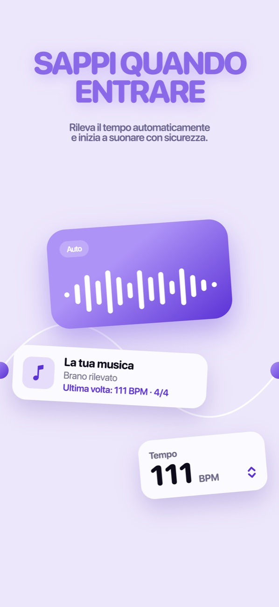
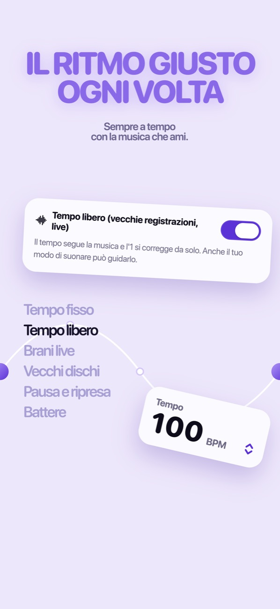
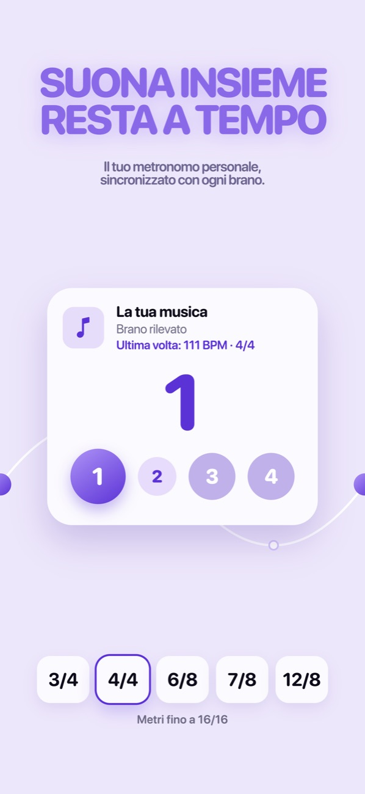
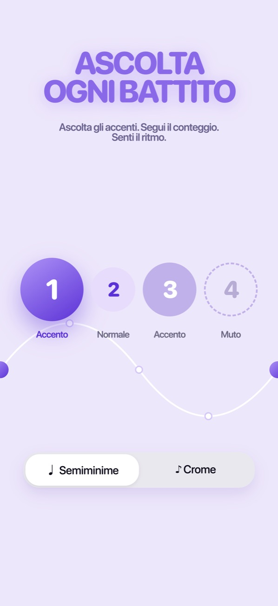

Come funziona
Fai partire la musica
Da un altoparlante, da una band o da un’altra app.
Lascialo ascoltare
Dopo circa 6–10 secondi tempo, metro e primo battito sono rilevati. I brani già ascoltati vengono riconosciuti in circa 5 secondi, anche senza internet.
Suona insieme
Il metronomo batte a tempo, con il primo battito più acuto e più forte. Anche in crome, se vuoi.
Resta sulla musica finché suona.
Tempo fisso
Una volta agganciato, tempo e primo battito restano fermi. Suonare, cantare o battere le mani non confonde il metronomo.
Tempo libero
Per registrazioni vecchie o dal vivo con tempo oscillante. Il metronomo segue la musica.
Riconoscimento offline
I brani già ascoltati ripartono la volta successiva con il battito giusto, anche se il tempo oscilla.
Pausa e rientro
In pausa il metronomo tace ma continua a seguire la musica. Il rientro lo riporta esattamente a tempo.
Pensato per le cuffie
Anticipo del clic contro il ritardo Bluetooth. I clic possono uscire dall’altoparlante dell’iPhone.
Manuale
Un metronomo classico da 30 a 300 BPM, metri fino a 16/16 e tap tempo. Funziona anche senza microfono.
Sappi quando entrare.
Primo battito accentato, quarti o ottavi. Ogni battito può essere accentato, normale o muto.




Nessun account. Nessuna pubblicità. Nessun tracciamento.
Leggi l’informativa sulla privacy- Microfono
- L’audio viene analizzato sul tuo dispositivo. Nessuna registrazione viene salvata o inviata.
- Riconoscimento dei brani
- Un’impronta audio (non l’audio) viene inviata a Shazam (Apple).
- Dati sul tempo
- Per un brano riconosciuto, titolo e artista vengono inviati a GetSongBPM.
Supporto per AutoMetronom
Descrivi brevemente la tua richiesta. Rispondiamo il prima possibile e usiamo i tuoi dati solo per gestire la richiesta.
Per poterti aiutare: indica dispositivo, versione di iOS, versione dell’app, il brano riprodotto e una breve descrizione. Uno screenshot è spesso utile.
Testi legali
Scegli la regione in cui usi AutoMetronom.
- SvizzeraInformativa sulla privacyCondizioni d’usoCopyright
- Unione europea e SEEInformativa sulla privacyCondizioni d’usoCopyright
- Stati UnitiInformativa sulla privacyCondizioni d’usoCopyright
- Cina continentaleInformativa sulla privacyCondizioni d’usoCopyright
- Altre regioniInformativa sulla privacyCondizioni d’usoCopyright